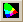
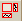

| Save | Saves the information displayed in the Chromaticity Diagram,
Display Viewer, and Results Table to a *.cie file |
| Copy Chromaticity Diagram to Clipboard | Copies the Chromaticity Diagram content to the
Clipboard |
| Copy Display Viewer to Clipboard
| Copies the Display Viewer content to the Clipboard |
|  | Maximize Chroma | Enlarges the Chromaticity Display on the left |
| Maximize Text | Enlarges the Results Table |
|  | Maximize Display
| Enlarges the display on the right |
 | Views
| Drop-down list includes views that are available in the
Display Viewer. The following selections are available based on the selected
custom calculation/display profile.
|
| | RGB Chroma Data |
| | Delta Eab* |
| | CIE LAB L* |
| | CIE LAB a* |
| | CIE LAB b* |
| | Cartesian Coordinate X |
| | Cartesian Coordinate Y |
| | Cartesian Coordinate Z |
| | Tristimulus X |
| | Tristimulus Y |
| | Tristimulus Z |